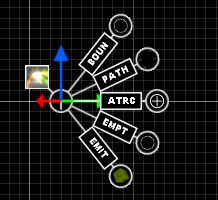
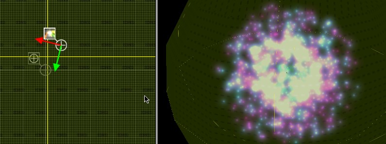
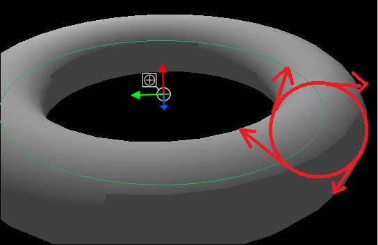
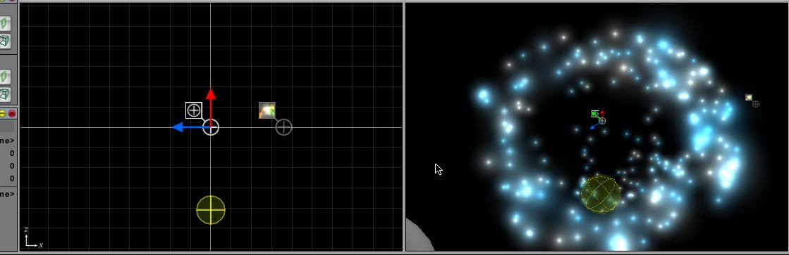

Generic Particle System
From C4 Engine Wiki
Contents |
Introduction
Generic Particle System (GPS) is C4 plugin for particle effect creation. Effects created using GPS can be used for smoke, explosions, snow, sparks and many more. All of them can be created within C4 Editor itself.
Main Features
- Preview in C4Editor perspective viewport
- C4 Script support which makes it possible to trigger GPS effect or change its properties trough Scripts and Panels in real-time
- Support for Custom mutators (GPS Properties) enabling users to expand functionality without need of modifying GPS core functionality
- Points with animated textures and lines (quads on todo list)
Installing
Binary Installation for stock 1.5.9 Windows build (without animation support) V0.6c
- Step 1
- Download and unzip archive with dll and examples into your C4 directory.Archive with binaries & examples.
- Installation finished. To place GPS into the editor, look for Pages->Particles->Generic Particle Sys (Composite)
Full installation (with animation support) for C4 licensees only V0.8
- Step 1
- Download and unzip archive version with project & source files into your C4 directory. Licensed user area.
- Step 2
- For MSVC users - add included project to your solution
- For xcode users - create plugin project similar to other C4 plugins
- Step 3
- Do several changes to C4Engine (2 files in 3 places) listed on forums Licensed user area.
- Step 4
- Rebuild whole Solution
Basics
The plugin will add item named "Generic Particle Sys" in the Particles page in C4Editor. To start using GPS add it to your world and link it to an Emitter volume using predefined 'EMIT' connector. To edit the system settings, go to Node Info dialog.
Preview
To activate/deactivate preview in perspective viewport use "Toggle Lighting"
Preview gets refreshed each time and only when you change something in "Get info Dialog" and press OK. If new connector gets added then user have to bring up "Get info Dialog", change something and apply changes. Once nodes are connected and GPS refreshed these nodes can be modified in any viewport in the Editor and GPS preview will get updated accordingly in real-time. Preview doesn't get influenced by Scripts nor Controllers (because Controllers do not exist while editing world in C4Editor) so for effects which involve Scripts or Controllers running game still is required to observe full results.
List of Connectors
- Connectors are used to assemble GPS together from various pieces. GPS can start functioning after at least Emitter Volume gets connected to it.

- List of predefined Connectors:
| Name | Purpose |
|---|---|
| EMIT | This connector must be connected to Emitter Volume otherwise GPS shall not function (Emitter of any shape from Particles page). Emitter is used for initial particle placement and for visibility tests (both can be overriden by EMPT and BOUN). |
| BOUN | Link for custom bounding volume, overrides Emitter visibility tests. This connector meant to be connected to some simple Geometry with visibility, collisions and shadows turned off. |
| PATH | For linking with Path. GPS can be configured to send particles along Path (see below) |
| ATRC | Connector for attraction marker |
| EMPT | Connector for emit point Marker or Group. When connected GPS initial particle position is set to Marker's position. It can be connected to Group containing multiple Markers. |
- Other Connectors that are used by GPS and can be added by user ("Get Info Dialog" -> "Connectors Tab") :
| Name | Purpose |
|---|---|
| SCAL | Marker for center of uniform scale. Useful if there are multiple particle systems which should be scaled uniformly together. If not connected GPS node position is used as scale center. |
| AFID | Used by Initial Speed Property to determine initial speed based on distance to connected marker |
| AUXO | Connector for Attached Nodes Property. Points to an object which should be placed at position of the particle. If connected to Group all immediate subnodes are used. |
| LOCK (v0.8) | Connector for Marker used to lock/align quads. Selected Marker's Z axis is used. |
| CONV | Used by Convection Property |
Usage & examples
Creating "star explosion" effect
Example of such GPS is provided in GPS_Examples/GPS_1_Bubble.wld. World contains only GPS Node, Marker and Sphere Emitter Volume.
- Emitter Volume is connected through 'EMIT', sphere volume is has large radius because it is used for visibility testing and this particle system grows very large.
- Marker is connected using 'EMPT' so that particles get created from single point in space.
- Most important settings are on 1st page
- Particles per second are set to maximum value
- Maximum particles set to thousands (actually 1000 is enough for this effect)
- Initial speed set to 10 M/s
- Align Init. Velocity is unchecked so that particles move in all directions
- Disable new particles checked so that particles doesn't get emitted initially
- Emit duration set to 1 second (1000 ms)
- Replay time set to 5 seconds so that particle system replays itself in the preview.
- There are some settings in "Stage 1" for this effect also worth mentioning
- Use this stage on
- Texture from C4Demo
- Min & Max colors
- Min & Max radius set to 2M
- Growth rate set to 0.1
- Minimum lifetime & Maximum lifetime less than a second
You might notice that resulting effect is boring little green blob. To make things more interesting enable Stage 2 and result will look like this:

- Main differences in "Stage 2" are
- Different colors
- Longer lifetimes
- Using default particle instead of Trail texture
- Fade-out time set to 700ms
Resulting explosion looks more like a slow gas leak, it can be made faster but still... There is an internal limit of 1000 new particles per second and even less in single frame. This is safeguard to prevent GPS from using too much resources. Lifting this limit is easy if using full version with source (C4 licensees) but it is not recommended for newbies. However it is possible to make this effect sharper with existing functionality. One of solutions is to use "Initial Speed Properties" found on Property tab. It is already added and configured, all you need to do is set "Use In Stage 1".
Using the attractor for "Lump of plasma"
All particles in a system can be attracted (or repulsed) to the position of a special marker. Example of such effect is in GPS_Examples/GPS_2_Attraction.wld. Attractor is simple marker linked using 'ATRC' connector.
- Example uses only 1 Stage. Here are relevant settings:
- Particle radius between 0.1 and 0.3.
- Lifetimes from 1 to 5 seconds
- Fade IN 500ms
- Fade OUT 500ms
- Affect by attraction enabled
- Acceleration set to positive value
- Force affected by distance enabled
- Proportional to distance enabled, it means that the farer the particle goes the more force it will get attracted with. This is used to contain majority of particles in center and prevent flying through desired region with high speed.
- Attraction boundary set to 0.2m so that particle 0.2m away will experience maximal force set by "Attraction acceleration".
Using Animation (animation works only in full verison)
Example GPS is at GPS_Examples/GPS_4_Animation.wld. Along with animation it demonstrates playing GPS using Panel&Script.
Example animation uses C4 texure C4/test, animation settings:
- Animate set to true
- Frame size set to size of individual frame as it appears on texture
- Target FPS set to 4 frames per second.
If you run this world you will be able to start GPS using Play button.
Using a Path
You can specify that all particles in a system move along a path (GPS_Examples/GPS_5_Path.wld). To do this connect the particle emitter's 'PATH' connector to a path you have created. Make sure to adjust the appropriate path settings in the Node Info of the particle system.
This example uses 2 Stages.
- 1st Stage to loop particles along the Path.
- 2nd Stage to propel particle upwards.
Blooming Contraption
GPS allows creating quite complicated effects. For example basic timing control can be done using settings provided by GPS, Scripts for more complicated tasks and state serialization over network or C++ code for full control. Example of complicated system can be found in GPS_Examples/GPS_9_Dance.wld.
Despite the fact that there are 5 "flowers" only 3 Particle Systems are used. Here is a breakdown of the effect:
- "flyers" moves group of markers named "mover" using negative attraction force.
- 1st stage propels markers upwards
- 2nd applies gravity
- "shafts" draws particles at positions defined by "mover".
- 1st stage draws shaft
- 2nd stage applies jitter to particles (upon erasing shaft)
- "blossom" draws explosion after preset delay (2 seconds) tuned so that it appears right after shaft gets drawn.
- first stages uses large initial speed to form something resembling explosion but with negative "Linear Acceleration Factor" to make particles stop completely soon after creation.
- first stages uses properties same way as Bubble example
- 2nd stage uses jitter and fade-out
All 3 particle systems are uniformly scaled around single marker "uniform scale center" to 2% of original size
To restart growth of flowers automatically while playing game parent group node called "seed" is used. It has Controller with Script which issues Play on all 3 GPSs after random intervals.
General Particle System Settings
Updated for v0.8
General
- Emission Rate The rate at which particles are created. Very high particle creation rates may cause the particle system to hit its particle limit (12000 currently)
- Emission Location Determines whether new particles appear on the surface of the emitter or within the volume
- Level decoration If unchecked system will remove particle system after when its last particle fades.
- Maximum particles Maximum number of particles to display at a time. If the system is set not to generate new particles, it will self destruct after the max number of particles have been created
- Maximum per frame Particle limit per frame (safeguard)
- Init. Speed Initial particle speed in meters/second.
- Align Init. Velocity If set direction of initial speed is X axis Particle System node (red arrow in the world editor)
- Spread Angle This defines maximal angle for random deviation of initial velocity in case if Align is on.
- Uniform scale Scales whole particle system uniformly, default = 1.0. Scale center can be defined by marker connect to GPS using
'SCAL' connector. Connecting to 'SCAL' is required only in case if multiple GPS are used for some complicated effect.
- Playback speed Playback speed multiplier.
Start/Resume
- Disable new particles Convenience flag to suspend/resume new particle creation in runtime.
- Freeze all Freezes particle animation (along with creation and destruction)
- Emit delay Duration in ms before particle creation
- Emit duration Limit of emission duration in ms
- Stop after particles Limit of particles created
- Keep animating if invisible Animates particle system even if invisible, best used for temporary effects so that they can finish playing in time.
- Fast forward Simulates particles for set duration before they are drawn for the first time (handy for things such as snow and rain). AADN connector can be used to link with subtree of GPS nodes in case of complex effects.
Editor
- Replay time Sets replay time for Preview in the Editor. It is meant to be used for particle system with limits set and restart them.
Particle Stage Settings
Updated for v1.0
General
- Use this stage Check this box for the system to use this stage. A stage is used when the lifetime of the particle in the previous stage expires. All active stages are used starting from 1st, inactive stages get skipped.
- Particle Type Point, Line, Quad aligned by Z of Marker connected to 'LOCK' (v0.8), Quad oriented to Z of Marker connected to 'LOCK'(v0.8).
- Blend state Several blending options, currently Default, Interpolate, Interpolate + Alpha preserve (for smoke), Replace, "Multiply" (v0.8).
- Texture path to texture. C4's "Small spark particle" texture is used by default
- Offset All (v0.8) Offsets particles created for Stage by some amount along X axis. This can be useful if particle system has to be rendered in certain order to the viewer (like smoke above fire).
- Render from bottom (v0.8) Renders particles from bottom in global space. If set lowest position won't change regardless of particle size (center by default)
- Attach particles to PSystem Node (v0.8) Renders particles in Stage relative to ParticleSystem Node. Handy for projectile effects.
Color
- Color from prev Stage If checked Stage uses same particle color as it was at the end of previous stage (including alpha)
- Minimum Color Each Particle will have a random color between the Minimum and Maximum color (used only if Color from prev Stage not checked )
- Maximum Color Each Particle will have a random color between the Minimum and Maximum color (used only if Color from prev Stage not checked )
Velocity
- Velocity from prev Stage Initial particle velocity for this stage is taken from previous stage and multiplied by this value. Value of 0.5 will transfer 50% of previous velocity.
- Linear Acceleration Z (Global) The acceleration acting on the particles on the global Z axis, in m/s^2. Negative values can be used for gravity (e.g. -9.8)
- Linear Acceleration (Red) The acceleration acting on the particles on the X axis of particle system node, in m/s^2
- Linear Acceleration (Green) The acceleration acting on the particles on the Y axis of particle system node, in m/s^2
- Linear Acceleration (Blue) The acceleration acting on the particles on the Z axis of particle system node, in m/s^2
- Linear Acceleration Factor Amount of acceleration regardless of direction. This can be used to do particle slowdowns or speedups.
Appearance
- Radius from prev. stage Particle size gets transfered from previous stage
- Minimum Radius Each particle will have a random radius between the Minimum and Maximum radius (used only if Use radius from prev stage not checked )
- Maximum Radius Each particle will have a random radius between the Minimum and Maximum radius (used only if Use radius from prev stage not checked )
- Minimum Lifetime The minimum lifetime of particles in milliseconds (1000 would be 1 second).
- Maximum Lifetime The maximum lifetime of particles in milliseconds (1000 would be 1 second).
- Fade IN duration Time used for fade-in in the beginning of the stage.
- Fade IN start value Fraction of alpha value used in the beginning of fade-in.
- Fade OUT duration Duration of fade-out at the end of the stage. Particle will have full brightness during lifetime - fade_in_dur - fade_out_dur milliseconds
- Fade OUT end value Fraction of initial alpha value which should remain at the end of fade-out
Movement jitter
- Max random acceleration (m/s^2) This controls the maximum random acceleration a particle can experience at each frame
- Random acceleration floor This controls the minimal random acceleration a particle can experience at each frame. Default behavior of this limit is to cut off all attempts to set acceleration values smaller than floor.
- Use floor as minimal Changes behavior of "Random acceleration floor" to make choice only from values between Max and Floor so that each time some kind of acceleration gets applied.
- Accel recalc rate Frequency of random acceleration recalculations. High values will make jitter nonexistent while lower will make it choppier.
Attraction
- Effected by attraction If this box is checked, then all particles in this stage will be attracted to the 'ATRC' marker.
- Attraction acceleration The acceleration acting on the particles in the direction of attraction marker
- Force affected by distance Attraction force gets dependent on distance from marker. The closer it is to marker the larger is acceleration. Dependency is linear. This setting needs force radius (last in batch).
- Force proportional by distance The closer it is to attraction boundary marked by Force Radius the larger is acceleration. This setting needs force radius
- Force radius Maximal distance at which attraction has an effect on particles.
Path
- Attach Particle To Path If this box is checked, the particle will be moved along the connected path. This will override all other movement settings.
- Path Velocity (m/s) The velocity at which the particles will move along the path.
- Max Path Offset The maximum distance a particle can be created from the path. The particle will maintain this distances along the length of the path.
- Loop Path If set particle continues traveling in loop around path until lifetime.
Orientation
- Random Initial Orientation Sets random initial particle orientation.
- Initial Orientation Manual Initial particle orientation.
- Orientation from prev stage Initial orientation will be set to last value of particle in previous stage
Rotation
- Rotation from prev Stage Initial rotation will be set to last value in previous stage
- Min rotation rate Minimal Initial rotation value.
- Max rotation rate Maximal Initial rotation value.
- Angular acceleration Increases or decreases rotation speed. values > 0 add more rotation speed and < 0 make it less over time (until full stop).
Collisions
- Enable collisions Enables collision detection against geometry
- Collider radius sphere radius used for collision detection against geometry
- Elasticity Collision elasticity
- Hit limit Limit of collision before particle gets destroyed or promoted to next stage
- Change stage if limit If checked particle gets moved to next stage after hit limit
Particle animation
- Animate particles Enables particle texture animation
- Frame size (px) Frame size in pixels
- From frame First frame used in sequence
- To frame Last frame used in sequence
- Animation Style Sequence, Random, Seq. Starting Random. Last 2 options use "random range" sliders.
- Random from First frame used in both random styles
- Random frame to Last frame used in both random styles
- Target FPS Animation FPS
- Loop animation Loops animation in case of sequence style
- Anim shortens lifetime (v0.8) Excess particle lifetime gets omitted (prevents last frame from hanging around for too long in case of Sequence)
Additional settings (GPS Properties)
GPS Properties can modify some aspects of particle system or add new functionality. Only 1 property of each type is allowed for whole GPS but properties can be turned on or off for each Stage.
Currently several GPS Properties are available in Property tab with additional settings:
| Property | Description |
|---|---|
| Attached Nodes Property | Can be used to replace particle with some object. |
| Initial Size | Particle initial size modifier based on play time at the moment of particle creation. Used only in "Stage 1" and works only if time limit or particle limit is used in main GPS settings. |
| Initial Speed | Particle initial speed modifier based on play at the moment of creation of the particle or distance to marker connected to 'AFID' connector of GPS. Used only in "Stage 1" and works only if time limit or particle limit is used in main GPS settings. |
| Convection Property | Moves particles along imaginary torus surface. (WIP, not all settings exposed and tricky to get desired results) |
Attached Nodes Property
Attaches object to particle position or substitutes it. Object must be selected using 'AUXO' connector. If connector points to Group all immediate subnodes of group are used instead.
- Hide used particle Hides particle which was used for attachment
Initial Size Property
Size modifier which gets applied on top of initial size when particle gets created.
- Start fraction Initial multiplier
- End fraction Smallest size fraction compared to size calculated by old_size*start_fraction
- Change duration (ms) Time in which smallest size should be reached.
Initial Speed Property
Speed modifier which is applied to initial speed when particle gets created based on time or distance from marker linked by 'AFID' connector.
- Affect by Emit Time If set initial speed is influenced by time since Play().
- Influence type Selection for Linear increase or decrease over time.
- Time to full change (ms) Sets maximum time limit considered in calculations
- Influence strength Maximum amount of speed which should be taken away when "Time to full change" is reached.
- Affect by Distance If set initial particle speed is influenced by particle distance to marker linked by 'AFID'.
- Influence type Selection for Linear increase, Linear decrease and Quadratic decrease based on distance.
- Influence radius Distance base (100%) considered in calculations.
- Influence strength Maximum amount of speed which should be taken away or added based on difference between "Influence radius" and distance.
Convection Property
Moves particles along imaginary torus surface. (getting desired results might be tricky) It requires 'CONV' connector attached to marker to determine torus center and orientation. Example can be found in GPS_Examples/GPS_8_Torus.wld.

- Base force distance Radius of convection force. Particle gets killed if it gets past 2x this distance.
- Large Radius Radius of torus (for green circle in picture).
- Tube Radius Radius of torus tube in M (for red circle in picture).
- Conv Speed Amount of force applied along (red arrows) closest cross section of the tube (easier to tune if used together with negative "Linear Acceleration Factor" from Stage settings)

Tips & Tricks
Scripts
GPS is compatible with C4Scripts. Most GPS settings can be changed at runtime through Script's "Change Settings" method. It works great but be advised that Script methods are using network to transfer states.
Referencing
GPS supports referenced worlds and models. Using references doesn't do any optimizations for GPS but still makes scene management much more easier in case when you need to place lots of GPS in your level.
Integration into game
There are 2 options of how GPS creation and destruction can be handled for use with short-lived effects (like shots and grenade explosions). In both cases GPS can be saved as standard mdl resource and will be treated as a Model by C4.
- Simple way
If you don't need 100 effects going on each second, probably you don't need much to do and can simply use GPS inside Model and rely on automatic cleanup. To enable it set "Level Decoration" to false. Model will be automatically deleted right after all GPSs within Model have finished rendering last particle.
- Using custom Pool
You might need to manage your own pools of models containing GPS. In this case "Level Decoration" should be set to true. When you need to reuse effect again, call Play() again for all ComposyteSystem nodes inside the model.
Other
- When emitting particles from a face, the particles will always be emitted from the same face of the emitter volume. Rotate the volume in the world editor to change which apparent face the particles come from
- By default particle visibility is determined by the emitter volume but you can add custom visibility volume and link it to BOUN connector.
Todo
- examples for "not-so-generic particle systems". for more user friendly experience